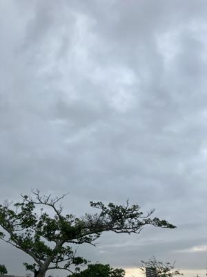
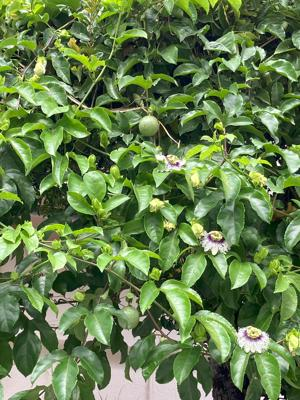
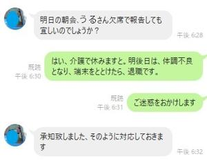

うるがいの話 ある日
最新: 無職に戻る【うるがいの話 ある日】とは 一日だけのプログです
『うるがいの話』の最新一日だけのプログで、通信料が少なく経済的だ。カニの画像をクリックすると全ての日付が載る『うるがいの話』サイトを表示します
|
|
【うるがいの話】 うるがい(ｳﾙｶﾞｲ urugai)とは、『もずくがに』の名前でとても大きくなります。 |
|---|---|
|
|
【カミマヤーの話】 猫のことを方言でマヤーといいます。カミマヤー（kamimayaa）とは、神の猫のことです。 |
|
【たながぁの音楽】 たながぁ（ﾀﾅｶﾞｰ tanagaa）とは手長えびのことで、何種類かあり大きいのは車 エビぐらいになります。 |

|
【ぶながぁの話】 ぶながぁ(ﾌﾞﾅｶﾞｰ bunagaa)とは、赤い髪の毛、赤い身体、そして身長は１ｍ２０ｃｍ ぐらい、川の蟹を食べているの目撃された。場所は沖縄県国頭郡大宜味村のと ある村僕の隣近所に住んでいる爺さんから、聞いた話です。 |
|
|
【ギーマの話】 ギーマ(giima)とは、山原の里山に咲くスズランに似た、 花を付けます。実は食べられます、 気が付くと口の周りが紫になっています。 |
2024年04月17日 (水）無職に戻る
15:23
 
今朝のリモートの朝会でＹシャツさんが、うるさんは退職しましたと伝える
いると思う。下は、日曜日の夕方Ｙシャツさんと私のＬｉｎｅでのやりとり
である。Ｙシャツさんが、いてとても運が良かった。

朝９時に、氏名と押印がある『退職届け』のＰＤＦをメールでオカさんに送
る。退職日は、本日付けにした。２度目の退職届けである（ことによると提
出しなくてもいいらしいが）。しかし、とんでもないプロジェクトに親会社
のリーダーとして、送り込まれたもんだ。３日から９時半に１０名近くのメ
ンバーに対し朝会を開催する。そして、午後には１時間のリモート会議、朝
Ｏｕｔｌｏｏｋでメールを確認すると、発注元の大手企業のプロジェクトリ
ーダーから、午前１時や２時に送信された私へのタスク（いつまで、仕事を
しているのだろうか？、メールのタイムスタンプをみる度に疲れてくる）を
確認する。親会社のリーダーとして、セキュリテイ対策などの間接メールも
飛んで来る。まったく、ワクワクしない。ただ、リモート端末の使い方は慣
れてきた。恩納村の移住者とは、頻繁にリモートで会話した。現役でもここ
まで働くとのはしんどい、給料３０万でも、とんでもない！（そもそも、そ
んなにお金いらないし）。
『退職届け』を出したあと、暇になる。おー、週２日ペースで、単なるメン
バー、リモートワークを探すべ。求職状態が４月１０日に無効になっていた
のを有効にした。そうそう、今回から学んだこと、職務経歴書や履歴書は本
当の事を書くのは、避けようとと思った。『能ある鷹は爪を隠す』である。
１５時１６分 ビットコインの総資産 ￥２８、７１２（↑４９０）